Payments journal
Process Transactions in the Payment journal
To enter your Payments Transactions:
- On the Default ribbon, select Batch entry (F2).
- Select the Payments Journal (linked to the correct Bank account) and click on the Open button.
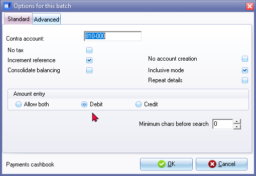
- Capture the following payments (cheques) issued on 1 March 2022 in the Payments journal:
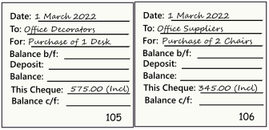
- After capturing the transactions, it should display as follows:
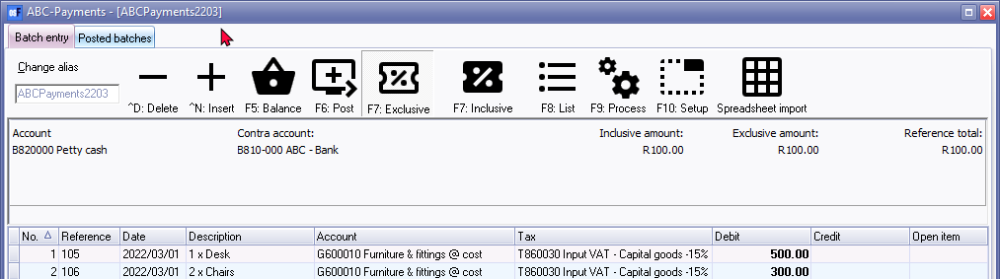
- Capture the following payments (cheques) issued on 30 March 2016 in the Payments journal:
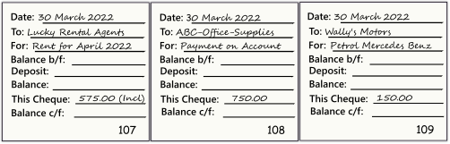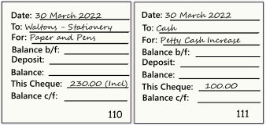
- An "Open item selection" screen will appear listing all purchase documents for Mr. AB Green. You need to select the purchase document which, is paid, i.e. PU000002. Select the correct amount and press the Enter key. This links this payment to that purchase document.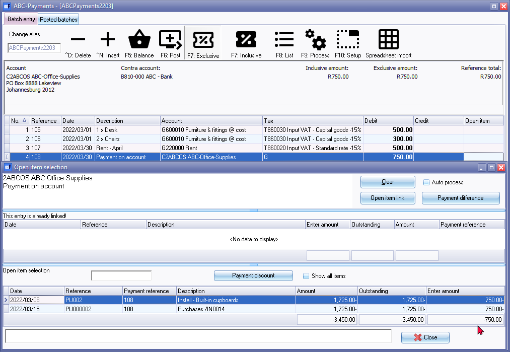
|
|
If a transaction for a debtor in the receipts journal is linked to an transaction on the Open item selection screen, the transaction will be displayed in a peach background colour. |

|
|
You may select (tick) the “Not open item batch” field (F10:Setup - “Options for this batch” - Advanced tab) to de-activate the open item feature in batches. |
- After entering all your payments (cheques), the screen should reflect your transactions as follows: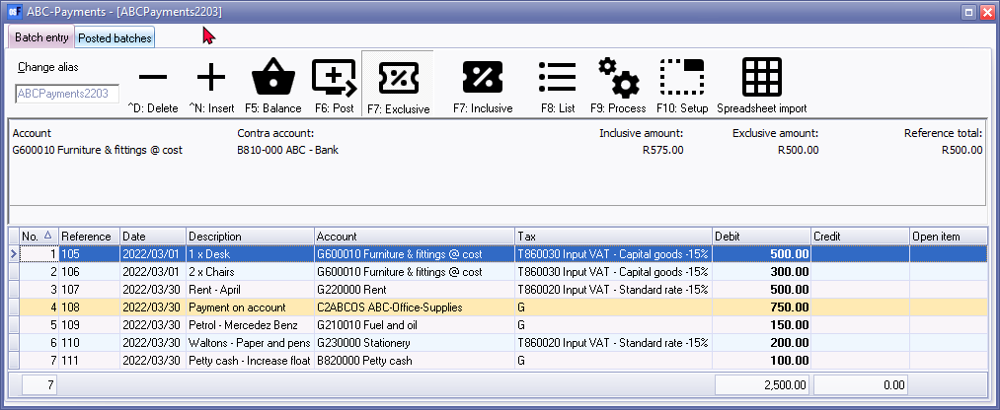
|
|
“F7: Inclusive” icon - Amounts in the normal or regular font indicate that it is entered Inclusive of VAT/GST/Sales Tax. If the “F7: Exclusive” icon is selected, the amounts are entered as Exclusive if VAT/GST/Sales Tax and will be displayed in the bold font. |

Finalising the Payments batch
Once you have completed entering these payments (cheques), and you are sure they are correct, you may proceed to finalise the batch. The recommended process, is as follows:
- Click on the F5:Balance icon. osFinancials will generate balancing entries. The balancing entries should reflect as follows: 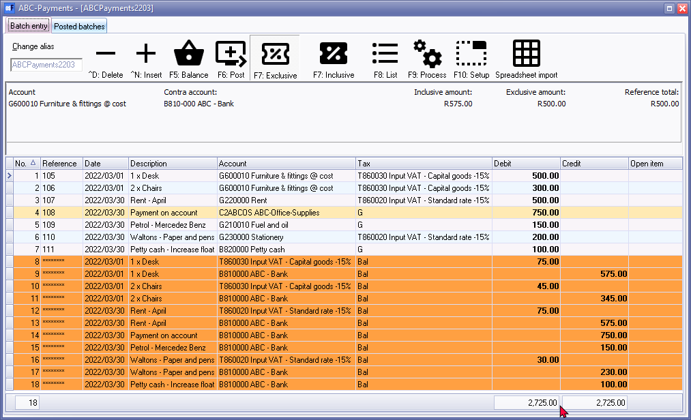
- Click on the F8:List icon to print a list of the transactions in the batch.
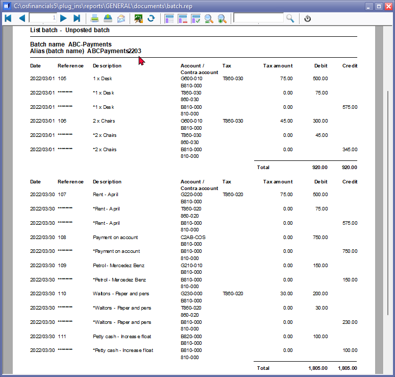
|
|
An asterisk (*) is automatically displayed before the description of the Balancing Entry, as replaced with your own. |
|
|
It is recommended that the source documents (e.g. payment requisitions and/or invoices, slips, etc. received from suppliers, etc.) be attached to this List of the transactions and that it be retained for record and audit purposes. You may also click on the |
- Click on the F6:Post icon, to post (update) the batch to the ledger.
T-Account view of transactions
All processed (posted) transactions will be accumulated in the Ledger analyser. There are various ways in which the transactions may be viewed, printed, exported and analysed.
To access the T-Account view of the transactions:
- On the Reports ribbon, select T-Account analyser 1.
- Select an account (e.g. B810-000 ABC - Bank) and double-click on it.
- Click on the following to get specific views of transactions:
- Batch number (e.g. 10012 automatically generated). This will list only the transactions for a specific batch (journal).
- Account code (e.g. B810-000 Current Bank account, G610-010 Furniture & fittings @ cost, G210-010 Fuel & Oil, B820-000 Petty cash, G220-000 Rent, C000-005 ABC-Office-Supplies, T850-020 Input Tax - Standard rate or T850-030 Input Tax - Capital goods). This will list the transactions for a specific account.
- Date – This will list the transactions for a specific date. If you double-click on a date, the “From date” and “To date” will be changed to the selected date.
After posting the transactions in the Payments journal, the transactions should display as follows in the T-Account viewer:
Batch view

Account view
|
Debit transactions in the Creditor’s ledger:
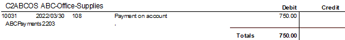 Debit transactions in the General ledger: 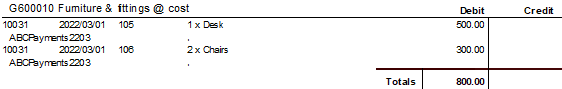
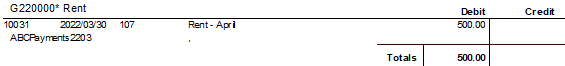
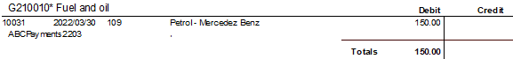 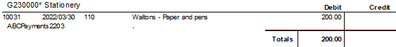
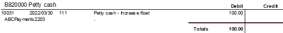
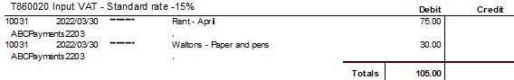 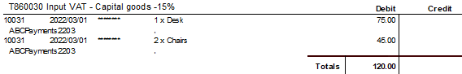 Credit transactions in the General ledger:
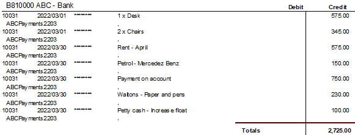
Debits = Credits Debit transactions in the General ledger (i.e. = Credit transactions (i.e. payment transactions from the |